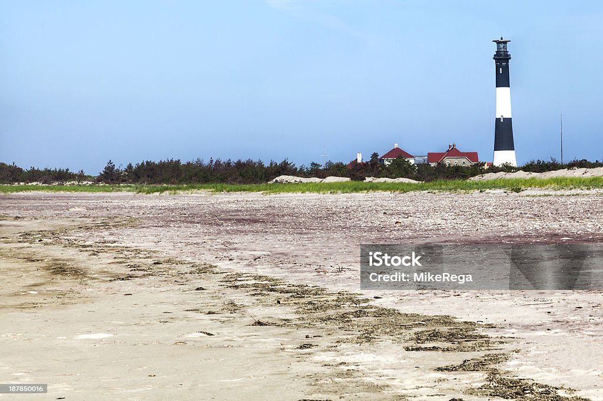

Hi, I am Hezron and I am sharing my experience at Fire Island. Visiting this island was an unforgettable adventure filled with beautiful beaches, peaceful dunes, and breathtaking sunsets. The calm environment and natural beauty make it a perfect escape from busy city life.
As part of my journey exploring new places, Fire Island truly stood out. The lighthouse views, ocean breeze, and scenic landscapes made the trip memorable. The pictures below capture some of the highlights of the park.
Fire Island is a beautiful national seashore filled with wildlife, scenic trails, and relaxing beaches. If you enjoy nature and coastal adventures, this park is definitely worth visiting.
Plan your National Park adventure today!